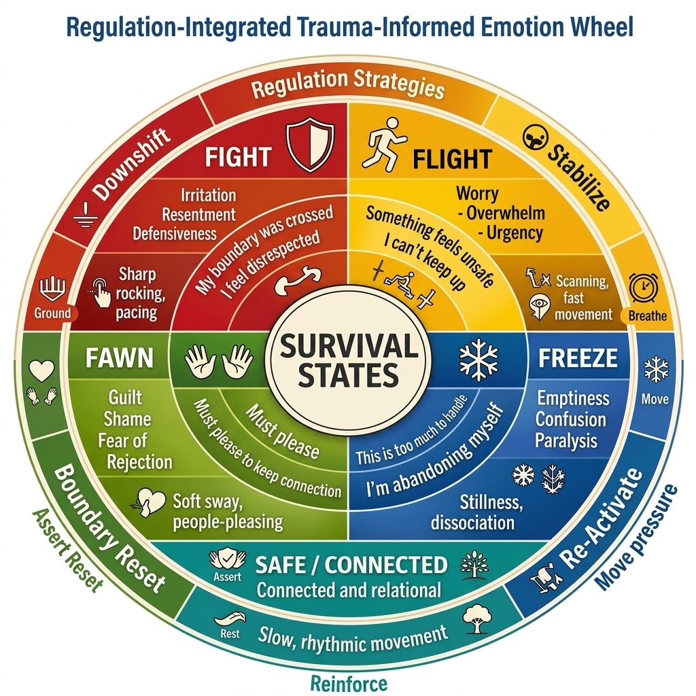

Trauma-Emotion Wheel

Core Trauma Survival Responses
- Fight: Activation and boundary defense. Shows up as irritation, resentment, or defensiveness when something feels threatening or disrespectful.
- Flight: Urge to escape or outrun the situation. Shows up as worry, overwhelm, or urgency when things feel unsafe or unpredictable.
- Freeze: Shutdown or immobilization. Shows up as emptiness, confusion, or paralysis when everything feels like “too much at once.”
- Fawn: Appeasing to stay safe. Shows up as guilt, shame, or fear of rejection when you feel you must please others to keep connection.
- Safe / Connected: Grounded, steady, and relational. Shows up as curiosity, openness, and a sense of support and presence.
Regulation Strategies (Outer Ring)
- Fight → Downshift (“Ground”): Use forward-fold grounding, weighted pressure, slow linear rocking, or bilateral tapping to reduce activation and help the body feel heavier and safer.
- Flight → Stabilize (“Breathe”): Use slow head turns, visual anchoring, and paced breathing to slow scanning, orient to the room, and bring the nervous system back into the present.
- Freeze → Re-Activate (“Move”): Use micro-movements, warmth and gentle pressure, and small rocking to bring the body out of immobility without overwhelming it.
- Fawn → Boundary Reset (“Assert”): Use bilateral movement, grounding before responding, self-permission statements, and simple boundary scripts to reconnect with your own needs.
- Safe / Connected → Reinforce (“Rest”): Use rhythmic rocking, creativity, relational connection, and rest to deepen the sense of safety and keep the system regulated.
Example Self-Check Script
Example:
“Right now I notice I’m in a Fight response.
The trigger was my boundary feeling crossed when someone spoke to me harshly.
My body feels tight and activated, so I’m going to choose a Downshift action:
I’ll step away, plant my feet on the ground, take three slow breaths, and do a forward fold for 30 seconds.”
You can adapt this script for any state:
“I notice I’m in a [Fight / Flight / Freeze / Fawn] response.
The trigger was [what happened].
My body feels [sensations], so I’m going to choose a [Downshift / Stabilize / Re-Activate / Boundary Reset / Reinforce] action:
[specific regulation step].”
Your Notes, Scripts, or Reflections
Use this space to write your own scripts, track triggers, or plan regulation strategies.